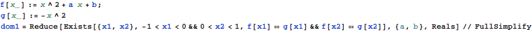

東京大学 2021年 理科 第1問
問題
a,bを実数とする。座標平面上の放物線 は放物線
は放物線 と2つの共有点を持ち、一方の共有点のx座標は-1<x<0を満たし、他方の共有点のx座標は0<x<1を満たす。
と2つの共有点を持ち、一方の共有点のx座標は-1<x<0を満たし、他方の共有点のx座標は0<x<1を満たす。
(1) 点(a,b)のとりうる範囲を座標平面上に図示せよ。
(2) 放物線Cの通りうる範囲を座標平面上に図示せよ。
解答
(1)
点(a,b)のとりうる範囲は


求める領域は下図塗りつぶし部(境界線は含まない)

(2)
放物線が通る領域は


これを図示したものは下図塗りつぶし部(境界線は含まない)。

補足・感想
領域を求めるのはMathematica任せ。